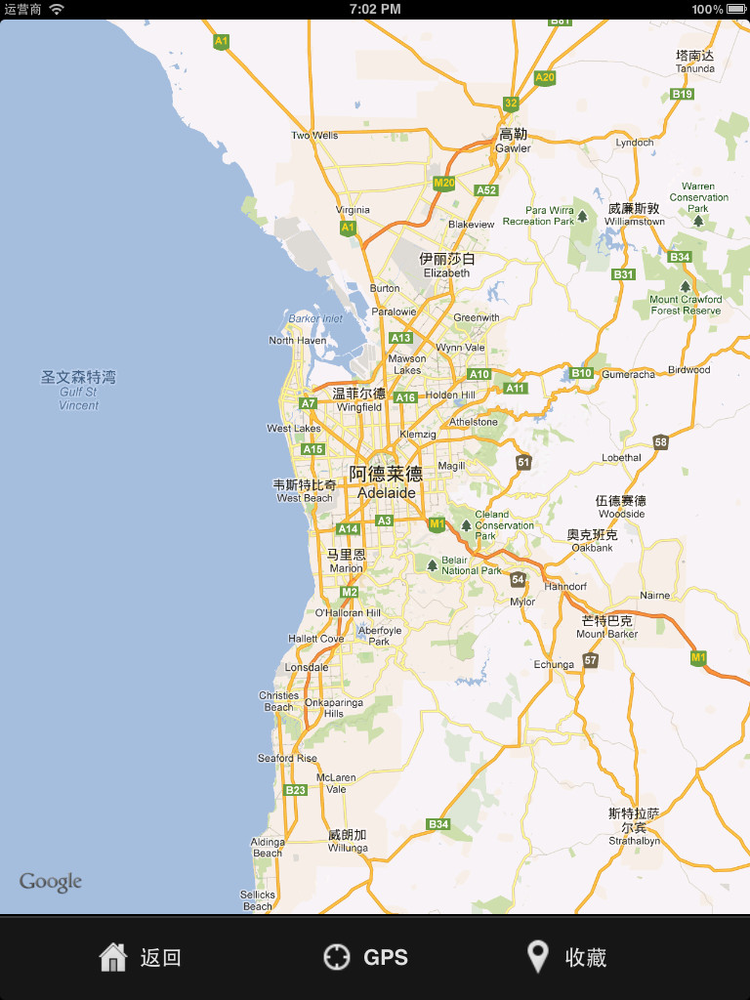
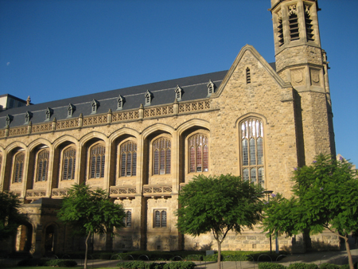
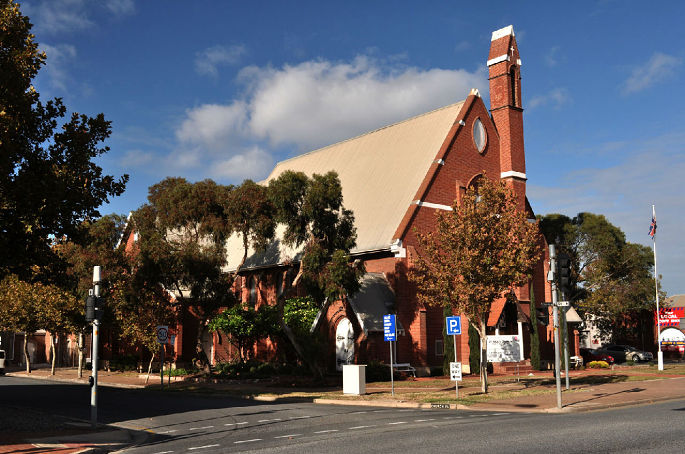
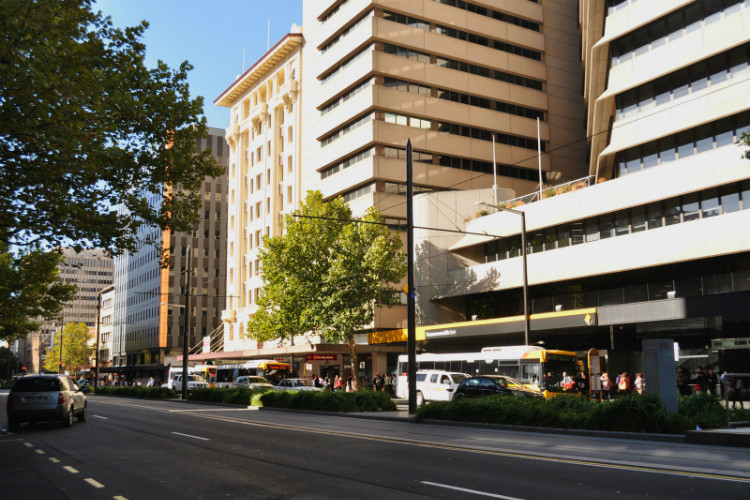

University of Adelaide The University if Adelaide School Website: http://www.adelaide.edu.au/ School Overview The University of Adelaide is located in the city center of Adelaide, the capital of South Australia. According to the Times Higher Education Supplement 2007 World University Rankings...
The University of Adelaide
School website: http://www.adelaide.edu.au/
School Overview

The University of Adelaide is located in the heart of Adelaide, the capital of South Australia. In the 2007 Times Higher Education Supplement global university rankings, it was ranked 62nd. It is a five-star university in Australia; A member of Australia's "Group of Eight." The capital and port of South Australia. With a population of about 1.1 million, it accounts for 72% of the state's population, ranking fourth largest after Sydney, Melbourne, and Brisbane. Summers here are hot and dry, while winters are cold and humid, with temperatures dropping to around zero degrees. Every November, Adelaide becomes a venue for Square Procedure racing and attracts many tourists due to its arts and wine festivals, making it very lively.

Honors and characteristics
The University of Adelaide manufactured the world's first organism that could be placed in natural environments and was genetically controlled, the world's first video computer chip, and the world's first car video phone. It successfully provided all engineering, electronics, communications, and other technical support for the 2000 Sydney Olympics. The spectacular performance of a unique giant fire wheel rising from the water at the opening ceremony was the result of the university's faculty and students' dedication. Additionally, since its founding, the University of Adelaide has produced three Nobel Prize Scholars and nearly 100 Rhodes Scholars. Australia's first astronaut also came from this university.

· Rated as one of only four Australian universities to reach the highest government level
· One of Australia's oldest and most prestigious universities
· Train three Nobel Prize winners
· Allowed for longer working hours

Founded in 1874, the University of Adelaide is one of Australia's oldest and most prestigious universities. Recently, the Australian government ranked the University of Adelaide as one of only four universities in Australia to reach the highest government level. The University of Adelaide campus is located in the heart of Adelaide, the capital of South Australia. Adelaide is a center of commerce, culture, politics, and social life, full of a sense of the times while preserving precious historical charm. It is an elegant and civilized city with a population of just over one million. Compared to the bustling and lively Sydney and Melbourne, Adelaide has a more refined charm!

Why choose the University of Adelaide
■ Long history, high reputation
With 115 years of history, the University of Adelaide has been able to develop a set of educational and research programs focused on overseas students. For more than fifty years, the university has been dedicated to educating international students. Many graduates have become leading figures in business, politics, and academia in Australia and around the world, as well as three Nobel Prize winners and numerous Rhodes Scholarship recipients.

■ Elegant environment and low cost
The University of Adelaide campus is located in the city center, backed by the expansive Montrofodi Mountains, boasting Australia's most beautiful urban beaches and a strategic location with access to the Australian outback and other major tourist destinations. Its mild climate and relaxed lifestyle are pleasant and comfortable, with a low living index and affordable accessibility, making it a suitable place for living, working, and studying.

■ High research and strong capabilities
The University of Adelaide is the most research-intensive public university in Australia, equipped with state-of-the-art teaching facilities. The university is highly accomplished, especially renowned in the following fields: information technology and remote communications, biological sciences, physical sciences, environmental science and management, and social sciences.

■ Good service and long working hours
The university pays special attention to auxiliary services for international students. These services mainly include: 1) Reception services, including airport pickup and drop-off at accommodation (as long as arrangements are made, all international students are guaranteed temporary accommodation upon arrival), assistance with long-term accommodation, introduction to libraries, campus and city tours, and advice on banking, shopping, transportation, etc. 2: Assistance for current students, including welfare assistance, assistance with student visa applications, health insurance guidance, and renewals; Additionally, working hours in Adelaide are relatively long. International graduate students can work up to 20 hours per week, while their spouses and family members can apply for work permits at the immigration office and work up to 40 hours per week.

College Structure
Undergraduate: School of Engineering, Computer and Mathematical Sciences; School of Health Sciences; School of Humanities and Social Sciences; School of Science
Postgraduate programs: School of Engineering, Computer and Mathematical Sciences; School of Health Sciences; School of Humanities and Social Sciences; School of Science
Language requirements
Undergraduate to Gaokao score around 500, IELTS 6.5
Graduate - IELTS 6.5
Tuition feesUndergraduate: Gaokao score 500, IELTS score 6.5
Graduate students: IELTS score of 6.5
The University of Adelaide has significant strengths in the following areas: business, brewing and food, health sciences, biological sciences, physical sciences, information technology and telecommunications, environmental sciences, and social sciences.

阿德莱德大学 The University if Adelaide
学校网站：http://www.adelaide.edu.au/
学校概况
阿德雷德大学位于南澳州首府阿德雷德市中心，《泰晤士报高等教育副刊》2007年全球大学排名第62位。澳大利亚五星级大学；澳大利亚“八大院校 （Group of Eight）”成员。南澳大利亚州首府和港口。人口110万左右，集中了全州人口的72％，次于悉尼、墨尔本、布里斯班，为全国第四大城市。这里夏季炎热、干燥，而冬季则寒冷、潮湿，气温最低会降至零度左右。每年11月,阿得雷德便成为方程序赛车的比赛场地,也因艺术节和葡萄酒节的举行而吸引许多游客，热闹非常。
荣誉和特色
阿德莱德大学制造了世界上第一个可放入自然环境中、遗传控制的有机体，世界上第一个可视计算机芯片，世界上第一个汽车可视电话。成功地为2000年悉尼奥运会提供了所有的工程、电子、通讯等技术保障，开幕式上独一无二的巨大火轮从水中升空的精彩表演就是阿德莱德大学师生的心血。另外，自创建以来，阿德莱德大学培养出了3名诺贝尔奖学者和近100位罗得学者（Rhodes Scholars）。澳大利亚第一名宇航员也出自该校。
·被评为澳大利亚仅有的四所达到政府最高级别的大学之一
·澳大利亚历史最悠久和最有声望的大学之一
·培养出三名诺贝尔奖金获得者
·允许打工时间较长
阿德雷德大学始建于1874年，是澳大利亚历史最长和最有声望的大学之一。最近，澳大利亚政府将阿德雷德大学评为澳大利亚仅有的四所达到政府最高级别的大学之一。阿德雷德大学的校园位于南澳大利亚州首府阿德雷德市中心，阿德雷德是商业、文化、政治和社会生活的中心，既充满时代感，又保留了珍贵的历史魅力，是一座高雅文明的城市，人口仅过一百万，比起繁华热闹的悉尼和墨尔本，阿德雷德更有一番温文尔雅的迷人之处！
为什么选择阿德雷德大学
■ 历史长 声望高
一百十五年的历史使阿德雷德大学能够发展一套以海外学生为重点的教育科研计划。大学在过去的五十多年来始终致力于海外学生的教育工作，很多毕业生已成为澳大利亚和世界各地的商界、政界和学术领域的领先人物，还有三名诺贝尔奖金获得者和许多罗兹奖学金获得者。
■ 环境雅 费用低
阿德雷德大学的校园位于阿德雷德市中心，而阿德雷德城背倚绵延的蒙特洛福迪山脉，坐拥澳大利亚最美丽的城市沙滩，且位居通达澳洲内陆和其它主要旅游胜地的咽喉地带，温和的气候和随意的生活令人身心舒畅，生活指数低，人人负担得起，是一个适宜生活、工作和学习的地方。
■ 科研高 实力强
阿德雷德大学是澳大利亚科研最密集的一所公立大学，大学拥有最先进的教学设施。大学实力雄厚，尤其在下列领域闻名于世：信息技术和远程通讯、生物科学、物理科学、环境科学和管理、社会科学。
■ 服务好 工时长
大学特别关心海外学生的辅助服务，这些服务主要有，一：迎接服务，包括接机并送到住地（只要预先安排，所有国际学生都能保证在抵达时有临时住处）、帮助联系长期住处、介绍图书馆、校园和市区游览，对银行业务、购物、交通提供建议等。二：在读辅助，包括提供福利帮助、协助办理学生签证、健康保险指导和续办等；此外，在阿德雷德允许工作的时间比较长，国际研究生每周最多工作20小时，而其配偶和家属可以向移民局申请工作许可，每周最多可以打工40小时。
学院设置
本科：工程、计算机及数学科学学院，健康科学学院，人文及社会科学学院，科学学院
研究生：工程、计算机及数学科学学院，健康科学学院，人文及社会科学学院，科学学院
语言要求
本科-高考成绩500左右 雅思6.5
研究生-雅思6.5
学费本科：高考成绩500分，雅思成绩6.5
研究生： 雅思成绩6.5
阿德莱德大学在下列领域具有显著优势: 商科、酿酒与食品、健康科学、生物科学、物理科学、信息技术与电信、环境科学和社会科学。
English edition. Select 中文原文 to compare with the original Chinese article.
This article is edited and published by Liaoning Overseas Study Service Co., Ltd. The content is for study abroad planning reference only. Unauthorized reproduction is prohibited.
Information on policies, regulations, admissions brochures, and program fees is timely. Please refer to the latest releases from official institutions and institutions in various countries; For detailed verification, please Contact an advisor。